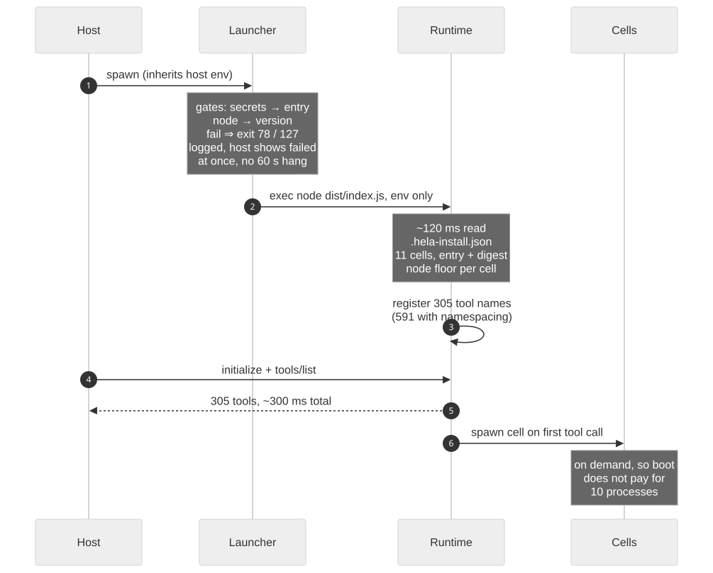
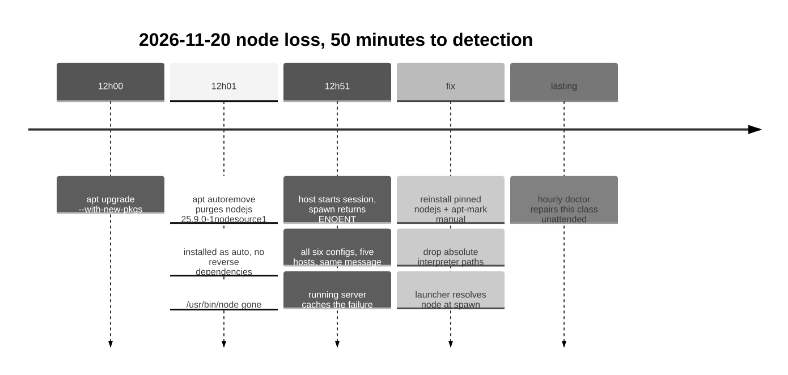

HeLa MCP Reliability Contract
Reference
docs/reliability.md
Original source language. Download source · All documents
How the MCP stack is wired, what breaks it, and how to repair it. Written after the
2026-11-20 outage where apt-get autoremove purged nodejs and every MCP host
failed with NotFound: ChildProcess.spawn (/usr/bin/node …).
Audited 2026-11-21 by a second agent against the live system; every number here was re-measured or dropped. Where a figure is approximate, it says so.
How the diagrams work
Each diagram exists twice, on purpose:
- Rendered SVG in
assets/diagrams/*.svg, embedded below. This is whatmarkmdisplays — its renderer ismarkdown-it+highlight.js+katexwith no Mermaid plugin, so a raw Mermaid block would appear as code. It also runs withhtml: falseand escapes raw HTML, which is why this document contains no<details>or inline<img>tags: they would print as literal text. - Mermaid source in
assets/diagrams/*.mmd, linked under each diagram. Edit there and re-render; never hand-edit an SVG.
Relative image paths are safe: markm rewrites a relative image reference into
data-local-src, resolves it against the open document's directory (normalising ..),
then loads it through Neutralino's filesystem.readBinaryFile.
GitHub, Obsidian and VS Code render the embedded SVG natively.
Regenerate after editing any .mmd:
cd assets/diagrams
for f in *.mmd; do
PUPPETEER_EXECUTABLE_PATH=/usr/bin/google-chrome \
npx -y @mermaid-js/mermaid-cli@11 -i "$f" -o "${f%.mmd}.svg" -b white -t neutral
done
# mermaid-cli writes no trailing newline; the pre-commit end-of-file hook rejects that.
for f in *.svg; do [ -n "$(tail -c1 "$f")" ] && printf '\n' >> "$f"; done
White background with the neutral theme on purpose: the SVGs stay readable in light
and dark viewers alike.
| Diagram | Question it answers |
|---|---|
| 1. Layer map | What talks to what, and who owns which failure? |
| 2. Boot timeline | What happens between "host starts" and "305 tools"? |
| 3. Triage tree | Host says failed — where do I look first? |
| 4. Cell supervision | Why did one tool stop working mid-session? |
| 5. Trust boundaries | Who can write credentials, and what can the sandbox touch? |
| 6. Incident anatomy | How did the 11-20 outage actually unfold? |
| 7. Check loop | What runs hourly, and what may it change on its own? |
| 8. Before/after | Why is it one launcher instead of six inline configs? |
Naming: there are 5 client applications and 6 config files — Gemini keeps two
(~/.gemini/settings.json and ~/.gemini/config/mcp_config.json). Diagrams that say
"configs" mean six; diagrams that name hosts show five.
1. Layer map

Source: 01-layer-map.mmd — edit, then re-render (see top).
- The host only knows one command. If it reports failure, the problem is at or below
the launcher — never "that one client's settings" unless
hela-doctorsayshostsis drifting. - The cells are children of the runtime. If the runtime boots and lists tools, the host is healthy even if one cell later dies (diagram 4).
- The launcher's own overhead is ~6 ms. A bare
nodestart is ~25 ms, so the launcher is not a meaningful cost — it is one shell process plus four tests the runtime would otherwise fail on later with a worse message.
Why the shape changed

Source: 08-before-after.mmd — edit, then re-render (see top).
The left side is what the machine looked like before this work: five clients each holding
27–31 env vars inline, two of them already disagreeing on NEEDLE_TOOL_INDEX_PATH and
HELA_ALLOWED_ROOTS, and every one of them pinning /usr/bin/node. The right side is
today: identical command everywhere, one file to rotate, one place to repair.
2. Boot timeline

Source: 02-boot-timeline.mmd — edit, then re-render (see top).
Measured three times against the launcher: initialize is answered at ~257–269 ms
(mean ~262 ms), and tools/list adds ~3 ms. So tool registration is the cheapest step,
not the expensive one — nearly all of the time is Node starting and the runtime reading
its cell catalog. Budget ~300 ms total.
| Exit | Meaning |
|---|---|
78 |
unreadable secrets, missing entry, or node below the required floor |
127 |
no node on PATH, or node -v unparseable (the message names the binary and the raw output) |
| silent | runtime booted but exposed 0 tools → HELA_PROFILE or manifest |
Host-side startup timeouts are separate: Codex uses startup_timeout_sec = 60, and the
doctor's own probe allows 90 s by default (120 s in the timer). Nothing in the chain
assumes 60 s.
Why the launcher logs to a file as well as stderr: hosts swallow child stderr. After a
failure the UI keeps only a one-line status; the log keeps the reason. The timestamp is
best-effort — if date is unavailable the line still records the reason, with
unknown-time in place of the clock.
3. Triage tree

Source: 03-triage.mmd — edit, then re-render (see top).
Start at the symptom the host actually showed. Note the asymmetry: interpreter and wiring failures are fatal for every host, cell deaths are contained to one tool family, and sandbox denials are normal behavior that merely reports badly.
4. Cell supervision
Source: 04-supervision.mmd — edit, then re-render (see top).
Restart delays are 1 s, 2 s, 4 s. The code caps the delay at 8 s, but with the default three attempts that cap is unreachable — the third failure marks the cell dead before any delay is computed.
More important, and easy to misread: the attempt counter is never reset. A cell that crashes, recovers, crashes, recovers, then crashes again is dead on that third crash, even across hours. It is three strikes per runtime lifetime, not per outage. Only a host restart re-arms.
5. Trust boundaries

Source: 05-trust-boundaries.mmd — edit, then re-render (see top).
Two separate boundaries, often confused: who may write credentials and what the sandbox may touch.
mcp.env is sourced as shell, not parsed. set -a; . "$SECRETS" means any command
substitution or function definition in that file executes as you at every MCP session
start, across all six configs. The boundary that matters is therefore write access to
~/.config/hela/ — 0700 dir, 0600 file. The launcher warns if the file is group/world
readable; hela-doctor fails it and --repair fixes it.
The ~/gdrive exclusion is not incidental — that tree contains a Drive shortcut cycle
(a shortcut pointing back into its own folder), which makes any local traversal descend
until PATH_MAX. Keeping it outside the roots means the filesystem cell cannot be walked
into that trap.
6. Incident anatomy

Source: 06-incident.mmd — edit, then re-render (see top).
The 50-minute gap between cause and symptom is the reason the launcher now logs and the timer checks hourly. The other lesson: restarting the app alone does not clear this — the host caches the failed connect, so the binary has to exist first.
7. Check loop

Source: 07-doctor-loop.mmd — edit, then re-render (see top).
The doctor has ~22 distinct check names; which ones emit depends on state. A healthy run today prints 17 lines (15 ok, 2 warn) in ~0.4 s including the live handshake. The two steady-state warnings are housekeeping: credential-bearing backups, and shadowed tools.
| Layer | Check line | Detects | --repair |
|---|---|---|---|
| Interpreter | node, node-mark, node-floor, node-path, node-shadow, npm |
missing/old node, auto-marked nodejs, stale launcher gate, PATH shadowing | node only |
| Runtime | manifest, runtime-entry, runtime-deps |
missing/unreadable manifest, missing dist/index.js, missing MCP SDK |
no |
| Cells | cells |
unbuilt entry, absent node_modules |
no |
| Assets | needle-engine, needle-model, needle-profile, scrcpy-server |
truncated model, non-executable engine, missing adb payload | no |
| Secrets | env-file, env-dir, env-keys, env-credentials |
perms, missing keys, blank/truncated credentials | perms |
| Wiring | hosts, host-mode:<name>, host-missing, host-binaries |
drift off the launcher, disabled client, dead third-party commands | no |
| Exposure | host-secrets, backups, backups-large |
plaintext keys in configs, credential backups, unscannable large backups | chmod 600 |
| End-to-end | live |
handshake, tool count, shadowed tools | no |
--repair performs four mutations, all idempotent: apt-get install nodejs +
apt-mark manual, chmod 600 on mcp.env, chmod 700 on ~/.config/hela, and
chmod 600 on credential-bearing *.bak* (including large ones it cannot scan). It never
edits a host config.
The three failure classes seen so far
| Class | Symptom | Detection | Repair |
|---|---|---|---|
| Interpreter loss/downgrade | ChildProcess.spawn (/usr/bin/node) NotFound; or cells failing on engines.node |
node, node-mark |
--repair reinstalls the pinned package and re-marks it manual |
| Config drift | one client works, another doesn't; keys missing or stale | hosts, env-keys |
point command at the launcher; restore keys from *.bak-secrets-centralized |
| Credential sprawl | plaintext keys in host configs or backups | host-secrets, backups |
strip env blocks; chmod 600 or delete backups |
Commands
The host layer is implemented once, in scripts/host-layer.mjs, reached through
doctor.mjs --hosts. ~/.local/bin/hela-doctor is a thin wrapper that resolves the
checkout, so there is no second implementation to drift.
node scripts/doctor.mjs --hosts # host layer, full check + live handshake
node scripts/doctor.mjs --hosts --json # machine-readable
node scripts/doctor.mjs --hosts --repair # node, credential modes, backup exposure
hela-doctor --no-live # same, via the installed wrapper
The client entry point is scripts/host-entry.sh, installed as
~/.local/bin/hela-runtime-mcp. It resolves the interpreter, gates the version,
sources the credentials file and logs failures — that is the one command every host
calls.
Exit codes: 0 healthy (warnings allowed), 1 failures, 2 doctor itself broke
(--notify fires on 2 as well). Logs: journalctl --user -u hela-doctor.service;
launcher failures append to ~/.local/state/hela/logs/mcp-launcher.log (rotated at
512 KB).
Note that a plain run is not read-only: it writes ~/.local/state/hela/node-min-major
(the launcher's version gate) and refreshes node-pin (the version --repair restores).
Automation
hela-doctor.service runs
%h/.local/bin/hela-doctor --repair --notify --timeout 120 2 minutes after login and
hourly thereafter. It exits 1 on genuine failures; SuccessExitStatus=0 1 keeps that an
alert rather than a failed unit.
Two facts worth knowing:
Persistent=truein the timer is inert — it only applies toOnCalendar=timers.- The steady state is
0 warnnow that the credential-bearing backups are gone. The remaining warnings, when they appear, are housekeeping (world-readable backups, shadowed tools) rather than failures.
Operating rules
- Never pin an absolute interpreter in host configs. Use the launcher; it resolves
nodeat spawn time and fails with an actionable message. Note the exception: the installer manifest.hela-install.jsonstill carries"node": "/usr/bin/node". No runtime code reads it — only the ecosystem's install/launch scripts and this doctor — so it is a latent trap, not a live one. Retire it when convenient. - One credentials file, and treat it as code.
~/.config/hela/mcp.env, 0600, dir 0700. It is sourced, so anyone who can write it can run code as you at every session start. Never paste keys into client configs; the durable copy lives in mema-vault. - Keep nodejs marked manual.
hela-doctornow fails withnode-markif the mark drifts back toauto— that mark is what letautoremovedelete the runtime the first time — and--repairre-asserts it. HELA_ALLOWED_ROOTSis the sandbox boundary. Currently project, Documents, Downloads, persona, skills, memory, HeLa state/install,/tmp,/var/tmp. Add a root when a legitimate tool is denied; never restore/.- After changing
mcp.envor the launcher, restart the host. A running MCP server keeps the env it booted with, and hosts cache a failed connect until restart. - Do not pass
HELA_SECRETS_FILEorHELA_RUNTIME_ENTRYthrough a host. The launcher ignores them by design; if you find a config setting one, that is drift.
Known limits
- The live probe proves less than it looks. It spawns no cell and calls no tool:
tools/listis answered from the manifest cache because cells are created on first tool call.[OK] live 305 toolsmeans node runs, the launcher gates pass, the manifest parses and the SDK answers. No cell is known to be executable. - 305 of 591 declared tools are reachable. With
HELA_NAMESPACE_TOOLS=0, bare names collide across cells and the runtime keeps whichever cell registered last; the agent catalog resolves the same collisions first-cell-first. The doctor reports the 286 shadowed names as a warning. Turning namespacing on exposes all of them but renames every tool, so it is a deliberate choice, not a flip. - Policy denials from
filesystem-mcpsurface asInvalid tools/call result: invalid_unioninstead ofpath escapes configured workspace roots— the cell returns a malformed error shape. Access is still denied; only the message is wrong. node-shadowandnpmwarnings are informational;--repaircannot fix a PATH that resolves a different node, only the installed package.- Diagram SVGs carry mermaid's
<foreignObject>labels, which browsers render but non-browser rasterizers (librsvg, ImageMagick) drop — boxes appear empty. Use Chrome headless to flatten to PNG. - Audit tooling caveat:
rtk-wrappedcat/sed/wchas served a stale revision of this file (410 lines) while/usr/bin/*showed the current one. When verifying a document, read it with absolute binaries.
Rollback and credential recovery
The credential-bearing backups were removed after every secret they held was copied into mema-vault (Fernet, master key required):
| Vault entry | Contents |
|---|---|
hela-openrouter-api-key |
current provider key used by the runtime |
hela-github-token |
current GITHUB_TOKEN |
hela-google-api-key |
current enzyme search key |
hela-google-cse-id |
current search engine identifier |
hela-*-old-20261118 (×4) |
rotated values found in the deleted backups |
chatgpt-codex-resume-token |
conversation-resume JWT from a Codex state backup |
To rebuild mcp.env after a loss:
cd ~/.config/opencode/skills/mema-vault
python3 scripts/vault.py env hela-openrouter-api-key --env OPENROUTER_API_KEY -- python3 - <<'EOF'
# write the four values into ~/.config/hela/mcp.env, then chmod 600
EOF
Then chmod 600 ~/.config/hela/mcp.env and run the host doctor. Non-secret settings
(HELA_PROFILE, paths, cache sizes) are documented above and in the launcher itself.
Config-shaped rollbacks from before the launcher migration no longer exist on disk; the shape they encoded is the one this document describes.